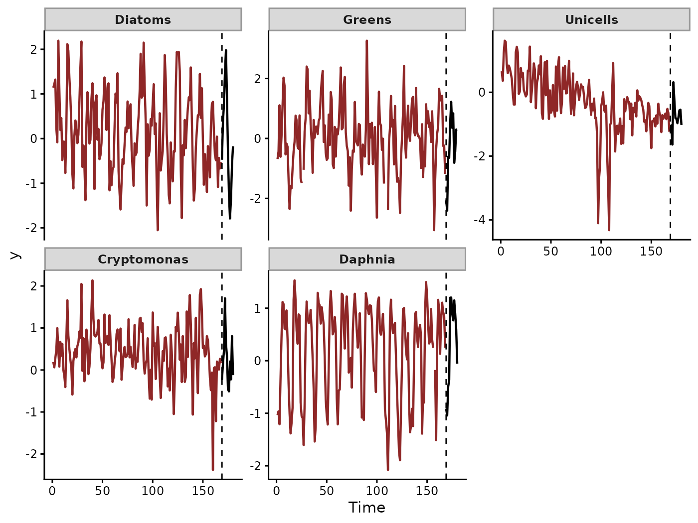
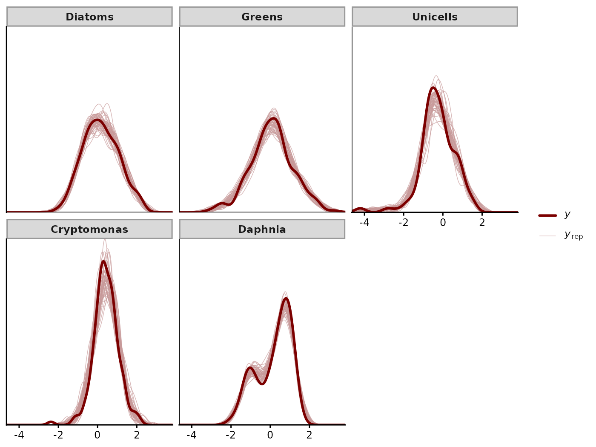
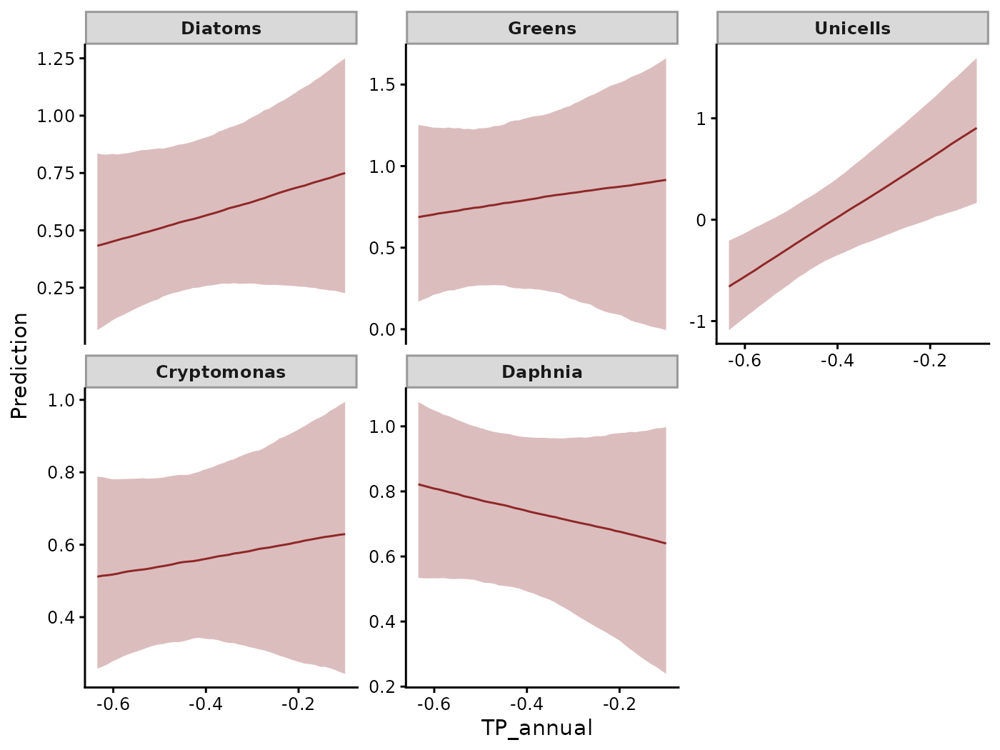
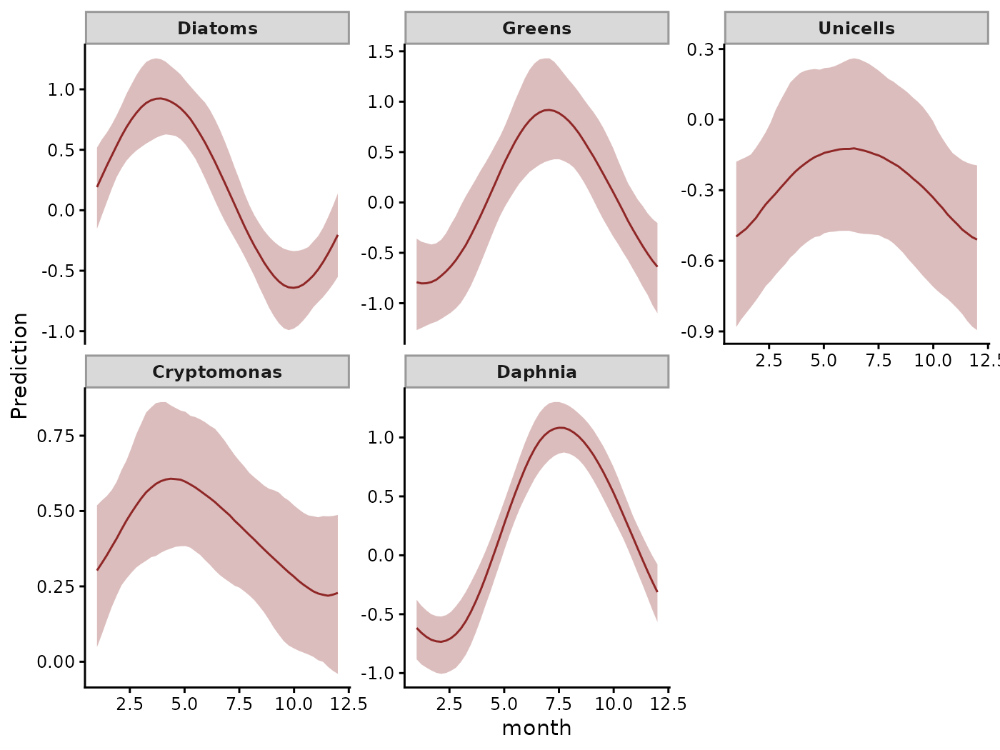
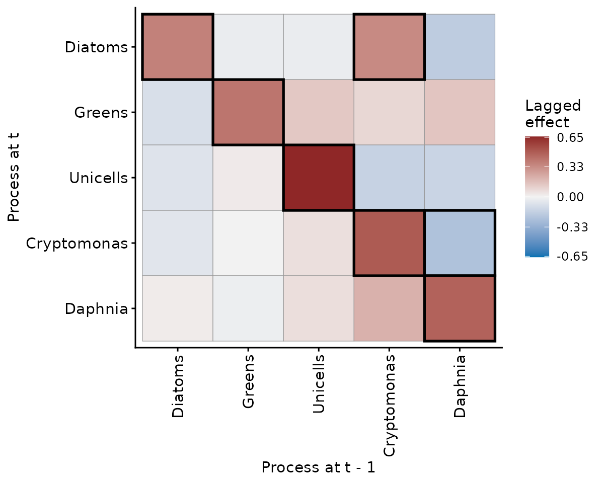
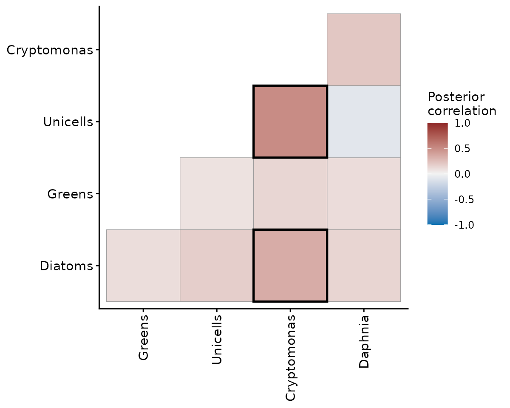
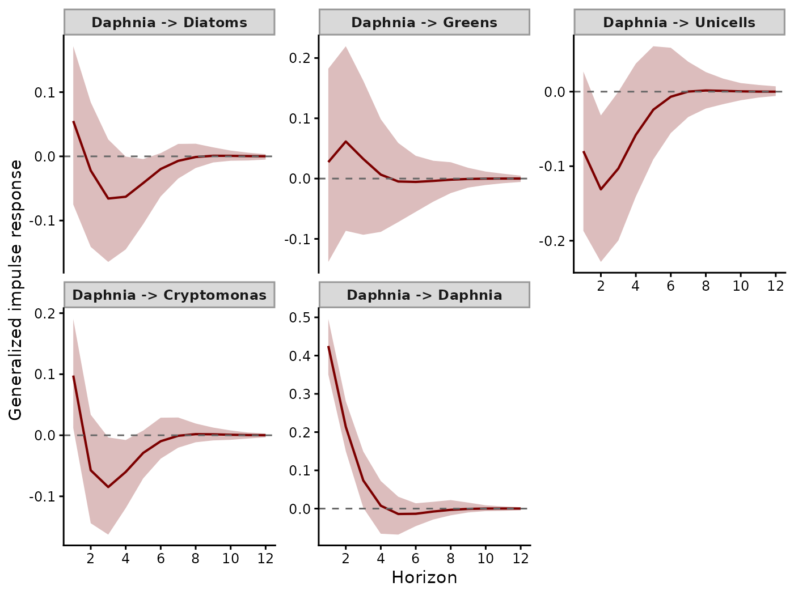
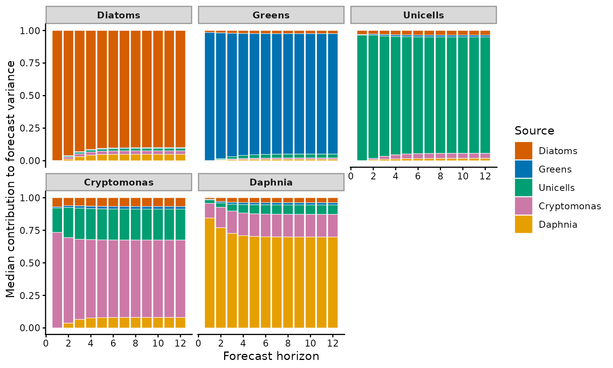
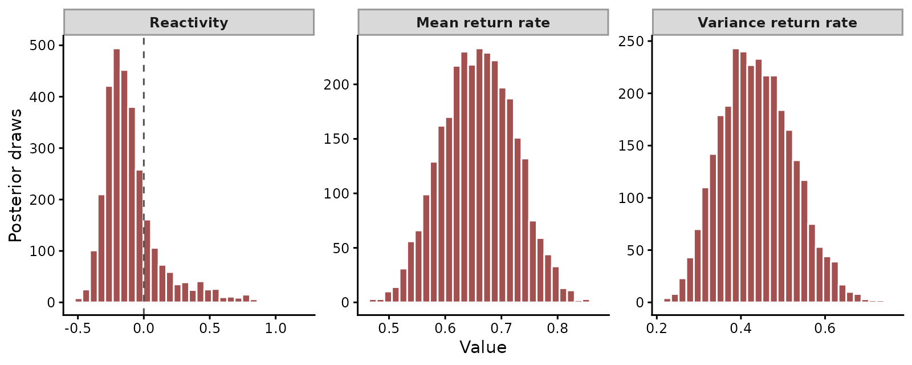
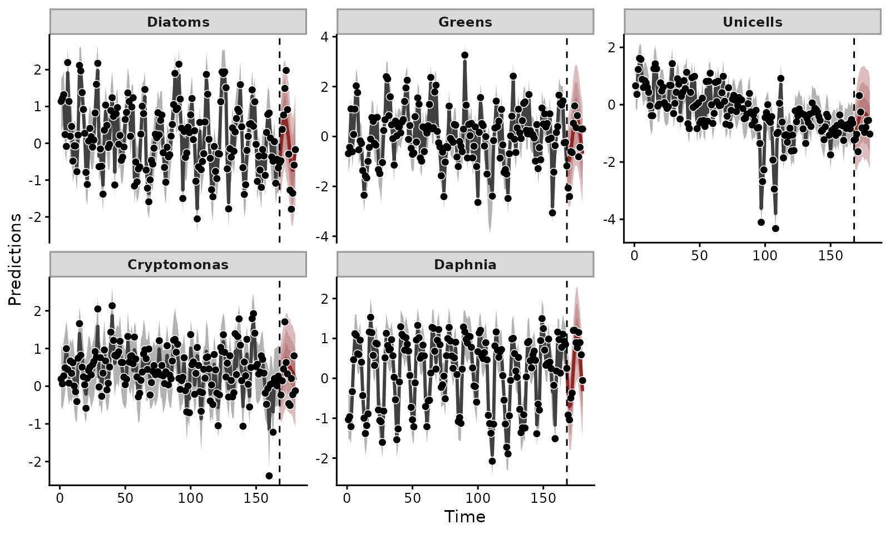

State-space vector autoregressions with mvgam
Nicholas J Clark
2026-10-28
Source:vignettes/articles/var.Rmd
var.RmdDo the plankton of a lake regulate one another from month to month, or do they rise and fall with the same seasons and nutrients? A vector autoregression (VAR) separates the two. It lets the state of each taxon this month depend on the state of every taxon last month. The coefficients of that dependence form a matrix . Its off-diagonal cells are the lagged interactions between taxa (Lütkepohl 2005).
mvgam fits the VAR to latent states. Because each measurement carries observation error of its own (Auger-Méthé et al. 2021), a separate observation model links those states to the data. This article fits that model to five plankton taxa from Lake Washington, then works through what a fitted VAR offers: the interactions in , the correlation of the taxa’s shocks, impulse responses, variance decompositions, stability metrics and forecasts.
The data
The MARSS package (Holmes et al. 2012) distributes monthly plankton densities and water conditions for Lake Washington from 1962 to 1994, drawn from the long-term monitoring of W. T. Edmondson. In the transformed version each density is log-transformed and then z-scored over the whole record, with zero counts recorded as missing.
We use the fifteen years from 1980 to 1994. That window is long enough to estimate monthly interactions and short enough to fit in minutes. We use five taxa. Four are groups of phytoplankton: diatoms, green algae, unicellular algae and the cryptophyte Cryptomonas. The fifth is Daphnia, a grazing zooplankter that eats them. Two water conditions enter as covariates. Temperature has a strong seasonal cycle. Because a smooth of month describes that cycle, the covariate is the temperature anomaly, each month’s temperature less the mean for its calendar month. Phosphorus income controlled the growth of algae in Lake Washington (Edmondson and Lehman 1981). Total phosphorus averaged over the twelve months to each month measures that nutrient loading.
load(url("https://github.com/atsa-es/MARSS/raw/master/data/lakeWAplankton.rda"))
lake <- as.data.frame(lakeWAplanktonTrans)
lake$TP_annual <- as.numeric(
stats::filter(lake$TP, rep(1 / 12, 12), sides = 1)
)
lake <- lake[lake$Year >= 1980, ]
lake$time <- seq_len(nrow(lake))
lake$temp_anom <- lake$Temp - ave(lake$Temp, lake$Month)
taxa <- c("Diatoms", "Greens", "Unicells", "Cryptomonas", "Daphnia")
plankton <- do.call(rbind, lapply(taxa, function(taxon) {
data.frame(
y = lake[[taxon]], time = lake$time, year = lake$Year,
month = lake$Month, temp_anom = lake$temp_anom,
TP_annual = lake$TP_annual, series = taxon
)
}))
plankton$series <- factor(plankton$series, levels = taxa)The data are in long format, one row per taxon and month.
series names the taxon and time counts the
months. The order of the levels of series fixes the order
of the taxa in every output below. We hold 1994 out to score forecasts
against:
train <- plankton[plankton$year < 1994, ]
test <- plankton[plankton$year == 1994, ]mvgam_data() checks the data against the model’s
requirements and plots each series, with the held-out months marked:
mvgam_data(train, family = gaussian(), newdata = test)
Monthly log densities of the five taxa, z-scored over 1962 to 1994. The final year is held out.
Each taxon cycles through the seasons. The unicellular algae also decline from 1980 until about 1988 and then level off, with two brief collapses near the end of the decline. A seasonal model alone would miss that decline.
The model
The model has two layers. The observation layer says that each log density measures a latent state with observation error, whose standard deviation differs by taxon:
The latent state is a mean set by the covariates plus a deviation that follows the VAR:
Each taxon has its own level and seasonal smooth , with its own slopes on phosphorus loading and on the temperature anomaly. holds the lagged effects among the deviations. holds the covariance of the monthly shocks. The VAR describes how taxa push one another away from their seasonal and nutrient-driven means. Seasonality itself stays out of .
mvgam’s VAR() keeps the process stationary: after a
disturbance, every deviation returns towards zero. The prior on
enforces this (Heaps 2023). A
stationary VAR cannot absorb a slow drift in a taxon’s mean. When we
fitted the model without phosphorus, the four chains disagreed about the
level of the unicellular algae, whose decline nothing in that model
explained. The phosphorus slope gives the drift a cause outside the
VAR.
The observation and process variances both describe scatter around the same latent state. Fourteen years of data from one lake separate them poorly: a month’s departure could be observation error or real change. The prior on supplies the missing information. We centred it on with a standard deviation of , which places observation error near a quarter of a standard deviation of log density, below the change in the populations from month to month. The data still move each taxon’s observation standard deviation away from that prior.
In mvgam the trend formula holds the latent model.
lv_axis() gives a term a separate effect for each taxon.
bf() gives the observation standard deviation a formula of
its own. With sigma ~ 0 + series, it takes one value per
taxon. The observation formula y ~ -1 adds nothing to the
latent state.
fit <- mvgam(
formula = bf(y ~ -1, sigma ~ 0 + series),
trend_formula = ~ lv_axis() + TP_annual:lv_axis() +
temp_anom:lv_axis() + s(month, by = lv_axis(), bs = "cc", k = 5) +
VAR(cor = TRUE),
family = gaussian(),
data = train,
newdata = test,
knots = list(month = c(0.5, 12.5)),
priors = prior(normal(-1.4, 0.2), class = b, dpar = sigma),
chains = 4,
iter = 1500,
warmup = 750,
control = list(adapt_delta = 0.95),
seed = 1980,
silent = 2
)bs = "cc" makes each seasonal smooth cyclic. December
then joins January, at the boundary that knots places
between them. cor = TRUE estimates the correlations among
the shocks in
.
Passing newdata stores the held-out year on the model for
forecasting. seed makes the sampling reproducible.
Checking the fit
We first checked that the model reproduces the data.
pp_check() draws replicate data sets from the posterior and
overlays their densities on the observed one, here separately for each
taxon:
pp_check(fit, type = "dens_overlay_grouped", group = "series",
ndraws = 50)
Density of the observed values (dark line) and of 50 replicate data sets drawn from the posterior (light lines), one panel per taxon.
The simulated densities bracket the observed density of every taxon. They reproduce the two peaks of Daphnia, which spends winter scarce and summer abundant.
What sets the means
The covariates and seasonal smooths give each taxon’s expected log
density when no taxon deviates from its mean. fixef() with
trend_effects = TRUE reports the coefficients of the trend
formula:
round(fixef(fit, trend_effects = TRUE), 2)
#> Estimate Est.Error Q2.5 Q97.5
#> seriesDiatoms_trend 0.42 0.26 -0.10 0.94
#> seriesGreens_trend 0.20 0.42 -0.64 0.99
#> seriesUnicells_trend 1.02 0.38 0.19 1.75
#> seriesCryptomonas_trend 0.52 0.20 0.11 0.92
#> seriesDaphnia_trend 0.02 0.20 -0.39 0.41
#> seriesDiatoms:TP_annual_trend 0.58 0.55 -0.46 1.71
#> seriesGreens:TP_annual_trend 0.39 0.84 -1.20 2.02
#> seriesUnicells:TP_annual_trend 2.91 0.77 1.31 4.44
#> seriesCryptomonas:TP_annual_trend 0.21 0.41 -0.60 1.03
#> seriesDaphnia:TP_annual_trend -0.34 0.42 -1.16 0.51
#> seriesDiatoms:temp_anom_trend -0.53 0.32 -1.17 0.08
#> seriesGreens:temp_anom_trend 0.25 0.42 -0.57 1.06
#> seriesUnicells:temp_anom_trend -0.05 0.31 -0.65 0.58
#> seriesCryptomonas:temp_anom_trend 0.35 0.25 -0.13 0.85
#> seriesDaphnia:temp_anom_trend 0.20 0.25 -0.29 0.70Because total phosphorus fell across the record, the positive slope of the unicellular algae on phosphorus predicts the decline the first figure shows. Their slope is 2.91 [1.31, 4.44] standard deviations of log density per unit of phosphorus. The intervals of the other four phosphorus slopes span zero.
mvgam computes effects on the outcome scale through the
marginaleffects package (Arel-Bundock et al. 2024). Every call here
passes type = "expected", which predicts the expected log
density
and leaves observation error out of the interval drawn around it. The
marginaleffects default, type = "response", draws new
observations with their observation error. A contrast between two such
predictions carries that error twice. Slopes and comparisons come from
the expected log density under either setting. avg_slopes()
averages the slope of the expected log density over the data, here
separately for each taxon:
marginaleffects::avg_slopes(fit, variables = "TP_annual",
by = "series", type = "expected")
#>
#> series Estimate 2.5 % 97.5 %
#> Diatoms 0.563 -0.460 1.712
#> Greens 0.379 -1.204 2.025
#> Unicells 2.917 1.314 4.440
#> Cryptomonas 0.201 -0.599 1.030
#> Daphnia -0.351 -1.165 0.515
#>
#> Term: TP_annual
#> Type: expected
#> Comparison: dY/dXIn a Gaussian model with an identity link, each slope has the
posterior of its coefficient. The table reports medians, where
fixef() reports means. Under a nonlinear link they differ.
avg_slopes() then reports the change on the outcome scale,
which the coefficients do not give directly.
conditional_effects() draws each effect with the other
covariates held at their means:
conditional_effects(fit, effects = "TP_annual", type = "expected")
Expected log density against twelve-month total phosphorus for each taxon, with 95% credible intervals.
The seasonal smooths carry the cycle that dominated the data plot:
conditional_effects(fit, effects = "month", type = "expected")
Seasonal smooths of expected log density by calendar month, with 95% credible intervals.
Diatoms peak in spring and reach their low in autumn. Green algae and Daphnia peak in mid-summer. Cryptomonas peaks in April. The temperature anomaly adds little once season is in the model. Its largest slope, for the diatoms, is -0.53 [-1.17, 0.08].
Interactions among the taxa
posterior_transition_matrix() summarises the transition
matrix cell by cell. Row
,
column
is the effect of taxon
’s
deviation last month on taxon
’s
deviation this month:
A <- posterior_transition_matrix(fit)
A
#> Lag-1 VAR transition matrix from an mvgam fit
#> Group : single-panel
#> Dimension : 5 x 5
#> Mean |A_ij| (i != j): 0.11
#> Point estimate:
#> Diatoms Greens Unicells Cryptomonas Daphnia
#> Diatoms 0.37 -0.03 -0.03 0.34 -0.18
#> Greens -0.09 0.41 0.14 0.09 0.14
#> Unicells -0.07 0.03 0.66 -0.16 -0.15
#> Cryptomonas -0.06 0.00 0.06 0.50 -0.24
#> Daphnia 0.02 -0.02 0.06 0.21 0.47
#> 95% CI on each cell available in `A_lower` / `A_upper`.The diagonal describes persistence. Each taxon’s deviation carries a coefficient between 0.37 and 0.66 into the next month. The heatmap outlines each cell whose 95% interval excludes zero:
plot(A)
Posterior mean of the transition matrix. Rows are the taxa at month t and columns the taxa at month t - 1. Outlined cells have 95% credible intervals that exclude zero.
In this fit, 2 of the twenty off-diagonal cells clear zero. Two cells have an ecological interpretation. The first is grazing. A month with more Daphnia than expected is followed by fewer Cryptomonas, with a coefficient of -0.24 [-0.43, -0.05]. The effect of Cryptomonas on Daphnia is 0.21 [-0.07, 0.82]. It is positive in 91% of the posterior draws, which suggests that more food in one month brings more grazers in the next. Fourteen years of monthly data do not settle that effect.
The second cell links Cryptomonas to the diatoms. A month with more Cryptomonas than expected is followed by more diatoms, with a coefficient of 0.34 [0.01, 0.95]. Because no feeding link runs between two phytoplankton groups, the likelier source is a driver the model omits, such as a change in mixing that favours one group before the other. A coefficient in records that one deviation predicts another without naming a mechanism.
Shocks and states
The transition matrix describes how taxa push one another over time.
The innovation covariance
describes which taxa receive the same unmodelled push in the same month.
A change in light or mixing that the covariates miss would appear as a
correlation between the shocks of the taxa it affects.
residual_cor() with covariance = "innovation"
reports these correlations:
rc_innov <- residual_cor(fit, covariance = "innovation")
summary(rc_innov)
#> # A tibble: 10 × 11
#> series_1 series_2 Estimate Est.Error Q_lower Q_upper ESS prob_positive
#> <chr> <chr> <dbl> <dbl> <dbl> <dbl> <dbl> <dbl>
#> 1 Unicells Cryptomon… 0.480 0.141 0.273 0.697 164. 1
#> 2 Diatoms Cryptomon… 0.270 0.134 0.0392 0.537 207. 0.990
#> 3 Cryptomonas Daphnia 0.241 0.111 0.0341 0.433 1002. 0.984
#> 4 Diatoms Unicells 0.176 0.0997 -0.0130 0.363 778. 0.968
#> 5 Unicells Daphnia -0.141 0.0976 -0.320 0.0487 1131. 0.0763
#> 6 Diatoms Greens 0.122 0.0955 -0.0592 0.302 1617. 0.902
#> 7 Greens Cryptomon… 0.108 0.113 -0.125 0.316 965. 0.834
#> 8 Diatoms Daphnia 0.0954 0.109 -0.134 0.291 410. 0.822
#> 9 Greens Daphnia 0.0319 0.100 -0.165 0.219 1048. 0.631
#> 10 Greens Unicells -0.00577 0.101 -0.201 0.188 732. 0.471
#> # ℹ 3 more variables: prob_negative <dbl>, prob_nonzero <dbl>, sig <lgl>The shocks of the unicellular algae and Cryptomonas correlate most strongly, at 0.48 [0.27, 0.70]. The model holds no covariate that would explain the shared rise.
The default, covariance = "stationary", correlates the
deviations themselves. Each deviation accumulates the shocks of many
months, passed through
:
rc <- residual_cor(fit)
plot(rc)
Posterior mean correlations among the deviations of the five taxa. Outlined pairs have 95% credible intervals that exclude zero.
The two correlations differ where couples the taxa. The shocks of Cryptomonas and Daphnia correlate at 0.24 [0.03, 0.43]. Their deviations correlate at 0.21 [0.00, 0.41]. Grazing passes each shock to the other taxon over the following months, which changes the correlation the shared shocks create. barely couples the unicellular algae and Cryptomonas. Their correlations are 0.48 [0.27, 0.70] for the shocks and 0.50 [0.29, 0.71] for the deviations.
Impulse responses
An impulse response gives the expected path of every taxon after a
single shock to one of them (Lütkepohl 2005).
irf() computes the generalised impulse response by default
(Pesaran and Shin 1998). The
shock to one taxon brings with it the shocks that its correlated taxa
receive in the same month, in the proportions
implies. Horizon 1 is the month of the shock.
irfs <- irf(fit, h = 12)plot() with series = 5 draws the responses
to a shock in the fifth taxon, Daphnia:
plot(irfs, series = 5)
Generalised impulse responses of each taxon to a one standard deviation shock in Daphnia, with 95% credible intervals. Horizon 1 is the month of the shock.
A shock raises Daphnia by 0.43 [0.35, 0.50] in its first month. The rise falls below 0.05 by month 4. Because the shocks of Daphnia and Cryptomonas are correlated, Cryptomonas moves with Daphnia in the first month, by 0.10 [0.01, 0.19]. Grazing then acts through . In the third month Cryptomonas is at -0.08 [-0.16, 0.00] relative to its expected level. The unicellular algae change by -0.13 [-0.23, -0.03] in the second month. Every response stays within 0.01 of zero from month 7.
Variance decompositions
A forecast error variance decomposition (FEVD) splits the variance of
each taxon’s forecast among the taxa whose shocks generate it, at each
horizon. fevd() splits the variance with the Cholesky
factor of
,
taken in the order of the levels of series. Where the
shocks of two taxa correlate, the factor assigns the shared part to
whichever taxon comes first. The diatoms come first and keep all of
their own shock.

Median share of each taxon’s forecast error variance that each source of shocks generates, by forecast horizon. Panels are the taxa forecast. Colours are the taxa whose shocks generate the variance.
For every taxon but Cryptomonas, its own shocks generate
most of its forecast variance. At twelve months those own shares run
from 68% to 90%. For Cryptomonas, the unicellular algae
generate 18% of its forecast variance in the first month and 23% by
month twelve. Most of that share comes from the correlation of the two
taxa’s shocks. The ordering assigns it to the unicellular algae because
they come first. The coupling of the two taxa appears in the
Daphnia panel, where Cryptomonas shocks generate 17%
of the twelve-month forecast variance. Reordering the levels of
series and refitting would move the shared part of each
correlated pair to the other taxon. The generalised impulse responses
above are the same in any order.
Stability of the community
stability() summarises the dynamics in
as community stability metrics (Ives et al. 2003).
Reactivity is the log of the largest singular value of
.
Above zero, some perturbation grows in the month after it occurs before
the community returns towards its means (Neubert et al. 2009). The mean return rate
is the largest modulus of the eigenvalues of
.
Once the slowest mode dominates, the distance from the means shrinks by
about this factor each month. The variance return rate is its square. It
describes how fast the forecast variance settles.

Posterior distributions of reactivity and of the mean and variance return rates. The dashed line marks zero reactivity.
Reactivity is -0.15 [-0.38, 0.54], with 79% of the posterior below zero. The data favour a community that damps every perturbation from the first month. They do not exclude one that briefly amplifies some perturbations. The mean return rate is 0.66 [0.54, 0.79]. At the median, a deviation halves in about 1.7 months. The plankton community returns to its seasonal and nutrient-driven means within a season.
Forecasting the held-out year
Passing newdata at fitting stored 1994 on the model.
forecast() projects the fitted states forward through those
twelve months and adds observation error:

Fitted values to the end of 1993 and forecasts for 1994 (right of the dashed line), with observations as points.
score() compares the forecast distributions with the
1994 observations. The continuous ranked probability score (CRPS)
measures the distance between a forecast distribution and the
observation, in the units of the data. Lower is better.
in_interval records whether the observation fell inside the
90% forecast interval:
sc <- score(fc, score = "crps")
data.frame(
taxon = taxa,
mean_crps = vapply(taxa, function(t) mean(sc[[t]]$score, na.rm = TRUE),
numeric(1)),
coverage = vapply(taxa, function(t) mean(sc[[t]]$in_interval,
na.rm = TRUE), numeric(1)),
row.names = NULL
)
#> taxon mean_crps coverage
#> 1 Diatoms 0.3845818 0.9166667
#> 2 Greens 0.4619623 1.0000000
#> 3 Unicells 0.3056566 1.0000000
#> 4 Cryptomonas 0.3396723 0.9166667
#> 5 Daphnia 0.2370524 1.0000000Of the 60 observations in 1994, 58 fell inside their 90% intervals, close to the coverage the intervals claim. The CRPS compares models scored on the same data, such as this VAR against an independent autoregression for each taxon. The forecast evaluation article works through that comparison with leave-future-out cross-validation.
The plankton of Lake Washington rise and fall mostly with the seasons and with phosphorus. In this fit, 2 of the twenty lagged interactions among the taxa separate from zero. The community damps a perturbation within a season. The forecasts for the held-out year keep close to their stated coverage.
Where to next
Each function used here has a help page, such as ?irf or
?residual_cor, with its arguments and output.
how_to_cite() writes a methods paragraph for a fitted
model, with its references.
Related articles:
- Hierarchical VARs fit one VAR per group of series, such as one per lake. Each group’s and are drawn towards a shared mean.
- Dynamic factor models describe many series with fewer latent processes than series.
- Forecast evaluation covers scoring rules and leave-future-out cross-validation.
- mvgam overview introduces the observation and trend formulas.
-
Formatting data covers the long data format
and
mvgam_data().
Chapter 8 of the Applied Time Series Analysis lab book fits multivariate autoregressive state-space models to the same Lake Washington plankton with MARSS.
References
Arel-Bundock V, Greifer N and Heiss A (2024). How to interpret statistical models using marginaleffects for R and Python. Journal of Statistical Software 111(9), 1-32. doi:10.18637/jss.v111.i09
Auger-Méthé M, Newman K, Cole D, Empacher F, Gryba R, King AA, Leos-Barajas V, Mills Flemming J, Nielsen A, Petris G and Thomas L (2021). A guide to state-space modeling of ecological time series. Ecological Monographs 91(4), e01470. doi:10.1002/ecm.1470
Edmondson WT and Lehman JT (1981). The effect of changes in the nutrient income on the condition of Lake Washington. Limnology and Oceanography 26(1), 1-29. doi:10.4319/lo.1981.26.1.0001
Heaps SE (2023). Enforcing stationarity through the prior in vector autoregressions. Journal of Computational and Graphical Statistics 32(1), 74-83. doi:10.1080/10618600.2022.2079648
Holmes EE, Ward EJ and Wills K (2012). MARSS: Multivariate autoregressive state-space models for analyzing time-series data. The R Journal 4(1), 11-19. doi:10.32614/RJ-2012-002
Ives AR, Dennis B, Cottingham KL and Carpenter SR (2003). Estimating community stability and ecological interactions from time-series data. Ecological Monographs 73(2), 301-330. doi:10.1890/0012-9615(2003)073[0301:ECSAEI]2.0.CO;2
Lütkepohl H (2005). New Introduction to Multiple Time Series Analysis. Springer, Berlin. doi:10.1007/978-3-540-27752-1
Neubert MG, Caswell H and Solow AR (2009). Detecting reactivity. Ecology 90(10), 2683-2688. doi:10.1890/08-2014.1
Pesaran HH and Shin Y (1998). Generalized impulse response analysis in linear multivariate models. Economics Letters 58(1), 17-29. doi:10.1016/S0165-1765(97)00214-0